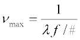
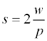
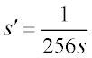
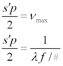
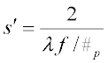
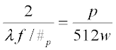
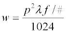

The Modulation Transfer Function (MTF) characterizes the contrast
performance of an optical system as a function of spatial frequencies. It is
the modulus of the Optical Transfer Function (OTF).
Two commonly used methods for calculating the MTF of a system are:
- Computing the
autocorrelation of the pupil function. The pupil function is appropriately
sampled with a grid of rays and then correlated and properly normalized. The
process is repeated for various wavelengths, and the composite is the desired
transfer function.
- Using Fourier,
transforming the PSF. This method follows from linear systems theory since
the Point Spread Function (PSF) is the optical equivalent of the impulse
response of the system. This is the technique used by ASAP. There is, however,
no single command in the program for this calculation. It is performed by a
series of commands that set the window and pixel relationships for the Fourier
transform after the appropriate ray trace is done.
Tips for Using Fourier
- ASAP can compute the PSF
of complex systems regardless whether or not it has well defined entrance and
exit pupils. This feature lends itself to computing the MTF of systems without
well-defined entrance and exit pupils.
- Since an Fast Fourier
Transform (FFT) is used to calculate the MTF, the sampling rate (number of
pixels) and window size must be made commensurate. This means that the area
over which the PSF is calculated must map into the transfer function space with
the correct spatial frequency cutoff. While the word diffraction is used in the
following derivation, the arguments are equally valid in the geometrical
regime. These cutoffs are determined according to the following rationale.
Spatial Cutoff Frequency
-
The spatial frequency cutoff of a diffraction-limited system is
given by:

where
λ is the wavelength and
F# is the F/number of the optical system. In a polychromatic
case,
λ is usually taken as the shortest wavelength since it has
the highest spatial frequency cutoff.
-
Assuming that the
WINDOW area is square and has a half-width of
w, the spacing
s between data points in real space is given by

where
p is the number of pixels across the window. After Fourier
transforming the data, the separation
s' of the output data in frequency space is given by

- The 256 corresponds to the
FFT size for ASAP. See the DIMENSIONS command to determine the FFT size for
your version of ASAP.
-
The half-width of the window in transformed space is simply equal
to the spatial frequency cutoff. The two equations are equated in order to
obtain

-
Solving for
s' yields

-
Equating expressions for
s' yields

-
Solving for
w

- The relationship must be
maintained for MTF curves to come out with the correct cutoff frequency.
MTF Calculations in ASAP
Recognizing that the
WINDOW and
PIXEL commands must be properly set is essential to
doing MTF calculations in ASAP. The remaining question has to do with
resolution: how many pixels are needed to sample the window area to give
meaningful results?
Tips for MTF Calculations
- The basic rule for MTF
calculations is that the window area should enclose a major fraction of the
total energy contained in the PSF. By concentrating on diffraction PSFs, it is
known that 84 percent of the total energy is contained in the central core of
an ideal Airy pattern. Referring to the equation, Solving for w, a window the
size of the core requires about 35 pixels for an F/2 system at 0.5 microns.
Ideally, you should use a somewhat higher sampling, particularly if the system
suffers from a small amount of aberration. In the presence of aberration,
energy is taken from the central core and distributed to the ring structure.
- Another recommendation is
to use an odd number of pixels for these calculations to ensure the presence of
a pixel at the center of the PSF/MTF. Using this recommendation avoids a
non-aesthetic shift in the patterns when there is no central pixel.
- Once system parameters are
configured properly and the ray trace is completed, you must calculate the
system PSF with
SPREAD NORMAL or FIELD ENERGY. The resulting
distribution file is entered into
DISPLAY where the actual FFT is computed with the
DISPLAY command FFT.